![DAILY SCHEDULE / DAY 4 OF 5 / Quality Assurance & Generative AI / 1 / 2 / 3 / 4 / 5 / 09:00–09:15 / Review, objectives and knowledge recap / Sylvester Sakitey / 09:15–10:00 / Feedback and correction / ToT Trainees & GH Facilitators / 10:00–10:45 / Live inspection of the [543] Photobooth Project by the clients / GH Facilitators as clients / 10:45–11:00 / Break / 11:00–12:15 / Introduction to Generative AI / Emmanuel Owusu Appiah / 12:15–13:00 / Lunch break / 13:00–14:00 / Introduction to prompt engineering / Emmanuel Owusu Appiah](assets/day4/slides/s01.jpg)
Day 4 morning is quality assurance: a recap, feedback and correction, then a live inspection of the [543] Photobooth Project with GH facilitators acting as the clients. After the break the focus moves to Generative AI and prompt engineering.


BEFORE THE VIDEO
Say: "Watch this. Who do you think made this AI?"
AFTER THE VIDEO
Say: "This AI is called EXAONE Deep. A team of RESEARCHERS at DGL, a company in South Korea, trained it"
It can think step by step, like a student solving a problem.
It can solve maths, science and computer problems.
It scored very high on a hard maths exam.
Anyone can use it for free.
THE MESSAGE
Say: "The team knew how AI learns, so they could teach it well. In this course, you will learn how AI learns too."
ASK THE ROOM
"If you could teach an AI to solve one problem, what would it be?"

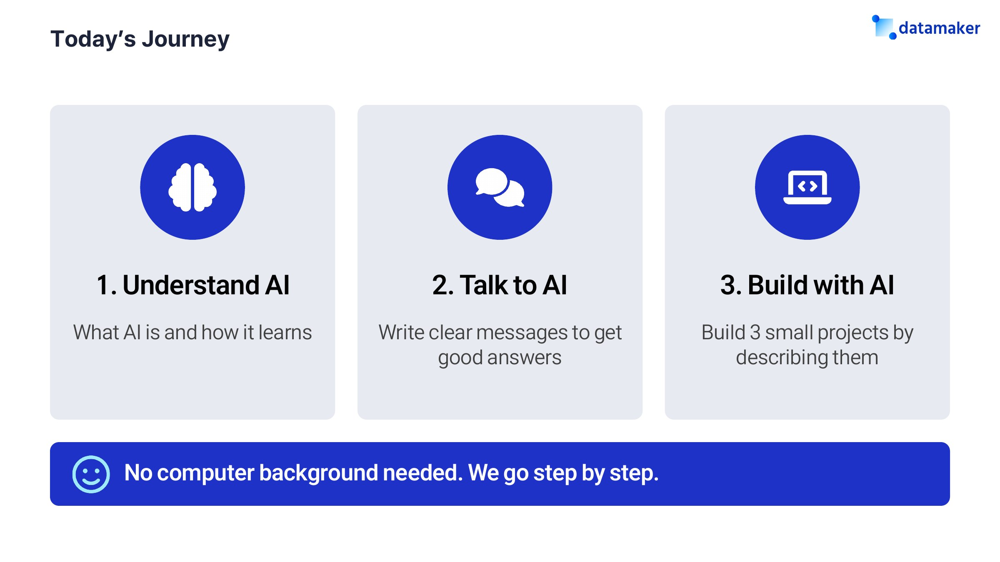
Today has three steps. First we understand AI. Then we learn to talk to AI. Then we build something with AI.
Every part has a practical activity. You will try things yourself.
INTERPRETER: Check everyone understands the word 'AI'. We explain it properly on the next slides.

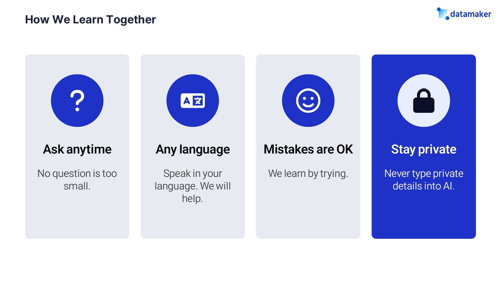
Some agreements for our time together.
Ask any question, at any time. There are no silly questions.
You can speak in your own language. The interpreter will help.
Mistakes are part of learning, for you and for the AI.
We never put private information into AI tools. We will talk about why later.
Is there anything you would like to add?

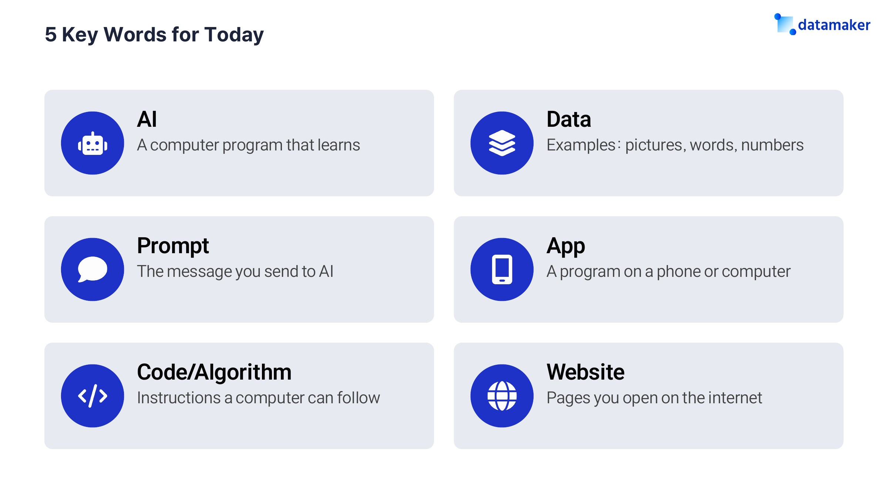
These five words come back all day. Let us learn them now.
INTERPRETER: Please translate each word and its meaning. If there is no word in the language, the English word is fine.
TIP: Write the five words on the board, with the translation next to each one.
Which of these words have you heard before?

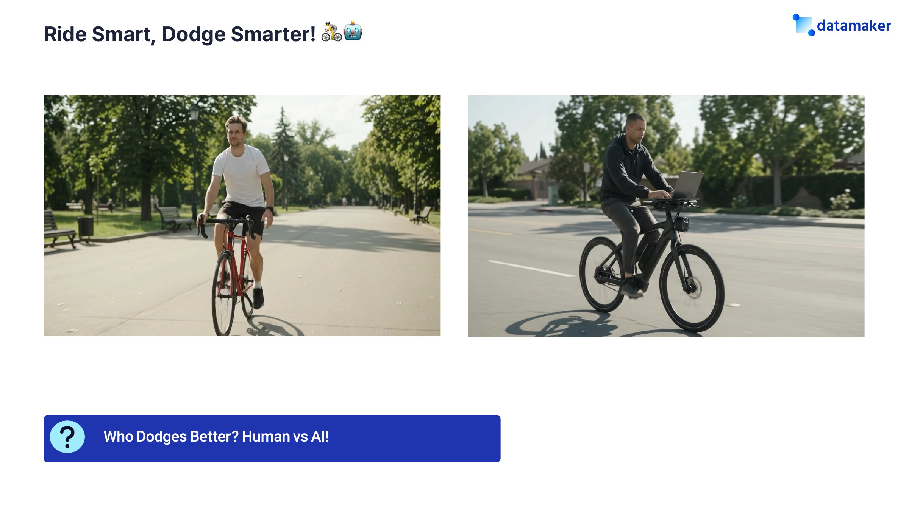
AUTOMATED OR AUTONOMOUS?
Automated = the machine does a job, but a person decides. Example: the bicycle helps brake, but the rider still steers and chooses where to go.
Autonomous = the machine decides by itself. No person is needed. Example: a bicycle that sees danger, chooses what to do and rides on its own.
Say: "Automated helps you. Autonomous decides for you."
Ask: "Is the AI bicycle in the video automated or autonomous? Why?" (Answer: automated. The rider is still in control.)
The lesson here is simple: AI isn't just about making machines smarter; it's about making everyday activities safer, easier, and more efficient."

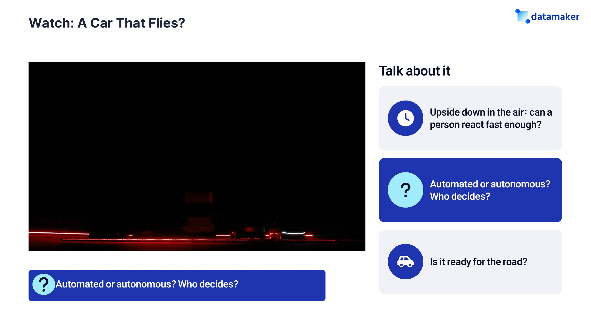
QUESTION 1: When the car is upside down in the air, can a person react fast enough? (No. Things happen in fractions of a second, so the car's computer must control the thrusters.)
QUESTION 2: Automated or autonomous? (Good discussion! The stunt is planned and practised in a closed area: the computer follows a plan and keeps the car balanced, which is mostly AUTOMATED. AUTONOMOUS would mean deciding by itself in new, busy places, like a city. The engineer says it cannot do that.)
QUESTION 3: Is it ready for the road? (No. Maybe production in 2028, and it must pass safety rules. Exciting videos are not the same as a finished product: always check the facts, as we learned in Part 4.)
INTERPRETER: thrusters = small jets that push the car; production = when the company starts making and selling it.
Source: NBC Nightly News report, supplied by the course organisers. Keep it for classroom use only.

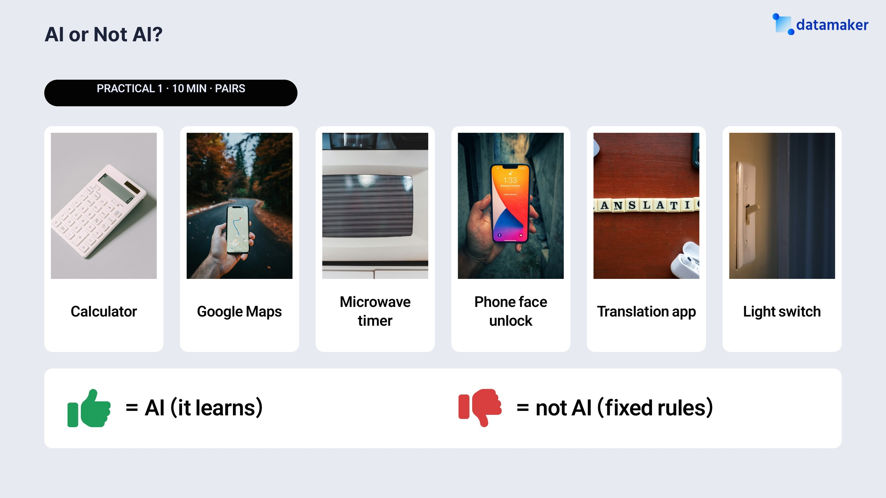
PRACTICAL 1 · 10 MINUTES · PAIRS
Look at each picture. Talk with your partner. Is it AI (it learns) or not AI (it only follows rules)?
Thumbs up for AI. Thumbs down for not AI.
ANSWERS: Calculator: not AI. Google Maps: AI. Microwave timer: not AI. Phone face unlock: AI (it learned your face). Translation app: AI. Light switch: not AI.
INTERPRETER: Read each word slowly. Let pairs discuss in their own language.


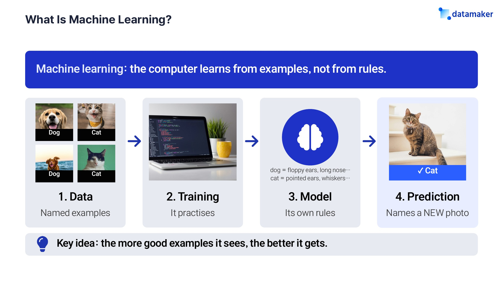
AFTER THE VIDEO
Say: "A child learns dog and cat from a few pictures. A machine needs thousands. But a machine can look at millions of pictures very fast."
Check: "Who teaches the machine?" (Answer: people, with good examples.) Then go to the four steps on the slide.
Machine learning is the part of AI that learns from examples.
In a normal computer program, a person writes every rule. For example: 'If a message says FREE MONEY, it is spam.' But people who send spam just change the words, and the rule stops working.
With machine learning, nobody writes the rules. We give the computer many examples, and it works out the rules by itself.
STEP 1, Data: many examples with names (photos marked 'dog' or 'cat').
STEP 2, Training: the computer practises with the examples, again and again.
STEP 3, Model: from the practice, it builds its own rules. This is called a model.
STEP 4, Prediction: we show it a NEW photo it has never seen. It says: 'Cat'.
KEY IDEA: The more good examples it sees, the better it gets, just like people learn from experience.
INTERPRETER: model = the rules the computer made by itself; prediction = a guess about something new.
It works much like people learn from experience: the more examples a system sees, the better its decisions become.
An ML system trains a model on input data. The trained model can then make useful predictions on new, never-seen data, as long as that data is similar to what it learned from.

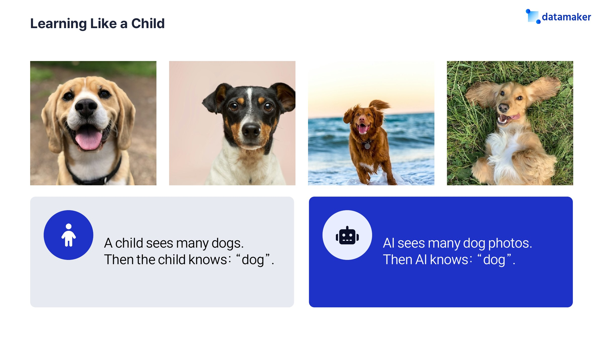
How does a small child learn what a dog is? Parents point and say 'dog' many times. Big dog, small dog, black dog. Soon the child knows a dog.
AI learns the same way. We show it thousands of dog photos with the word 'dog'. Then it can find dogs in new photos.
How did you learn to recognise an apple as a child?

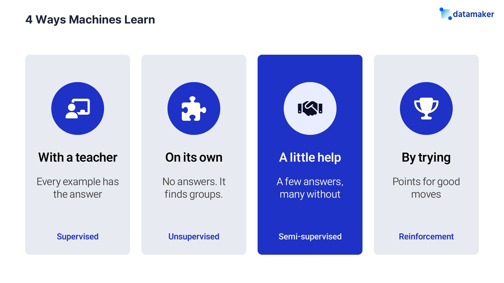
Machines learn in four main ways.
With a teacher: every example has the answer. 'This photo is a cat.' Expert word: supervised learning.
On its own: no answers. The AI puts things that look alike into groups. Expert word: unsupervised learning.
A little help: a few examples have answers, most do not. Expert word: semi-supervised learning.
By trying: like a game. Good moves get points. Expert word: reinforcement learning.

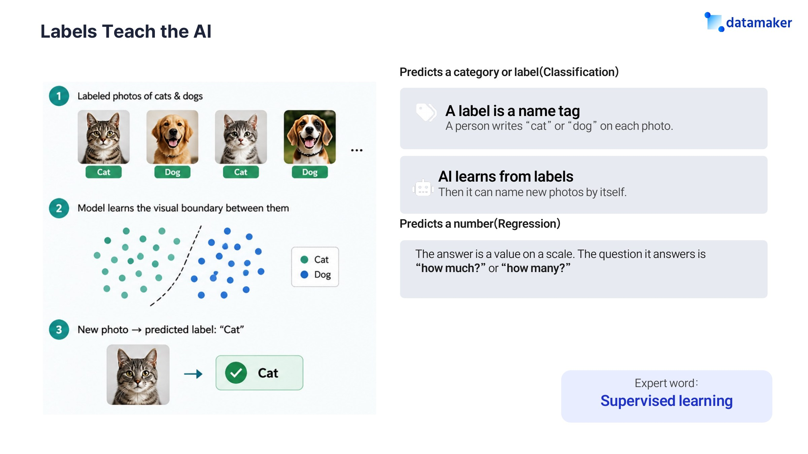
The model trains on labelled data: data that comes with a tag such as a name, number or type (“apple”, “spam”, “GH₵ 250”).
Each input is paired with its correct output. The model compares its prediction with the right answer and adjusts itself to reduce mistakes.
It works like a teacher guiding a student with a marking scheme, which is why it is called “supervised”.
The goal is to make accurate predictions on new, unseen data, for example reading handwritten digits it has never seen before.

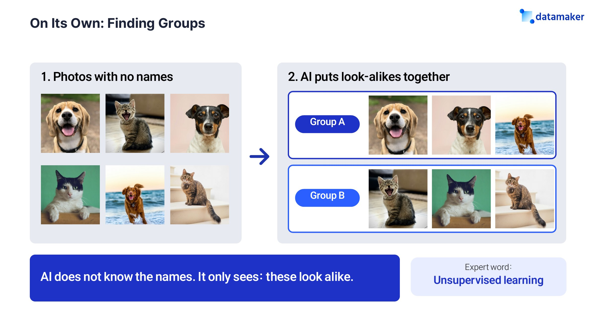
The model gets unlabeled data: no tags and no correct answers. Nobody tells it what to look for.
It studies the inputs on its own to find hidden patterns and groups, by measuring how similar data points are and looking at the structure of the data.
Unlabeled data is easy and cheap to collect, but it is often messy: noisy values, gaps and unknowns.
Here the AI gets many photos with NO names. Nobody tells it 'dog' or 'cat'.
The AI looks at the photos and puts the ones that look alike together: Group A and Group B.
It does not know the words 'dog' or 'cat'. It only knows: these look alike.
Shops use this to find groups of customers who buy similar things. News apps use it to group similar stories.
unsupervised learning ('un' means 'no' teacher)

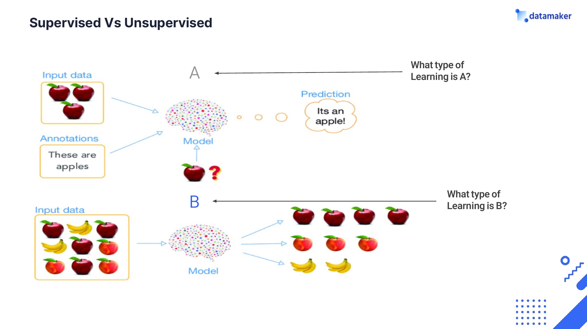

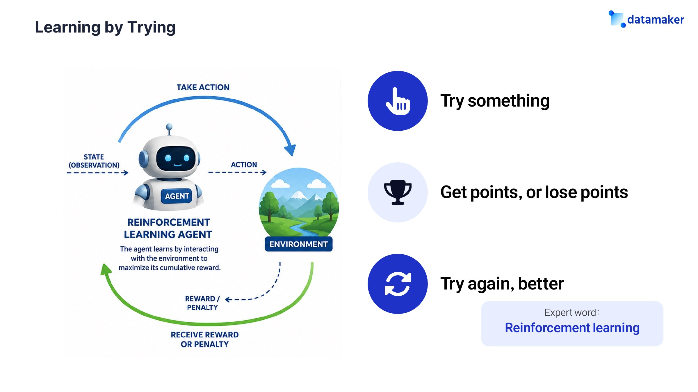
Look at the picture. The robot (the agent) tries an action. The world gives a reward (points) or a penalty (lose points). The robot remembers and tries again.
This is how computers learn to play games, or how a robot learns to walk: fall, try again, fall less.
What did you learn by trying again and again? Riding a bicycle? Cooking?

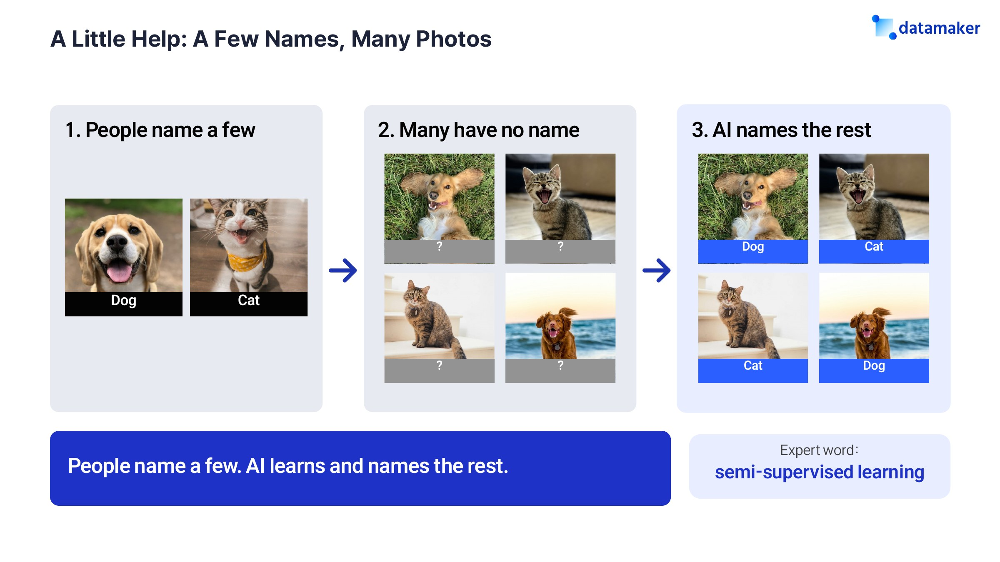
Giving names to photos takes a lot of time. So sometimes people name only a few photos
STEP 1: People name a few photos: 'dog', 'cat'.
STEP 2: There are many more photos with no names.
STEP 3: The AI learns from the few named photos, then names the rest by itself
This saves a lot of time and money. It is a mix of 'with a teacher' and 'on its own’.
LINK: The careful naming in step 1 is data labelling work. If those few names are wrong, everything after is wrong.

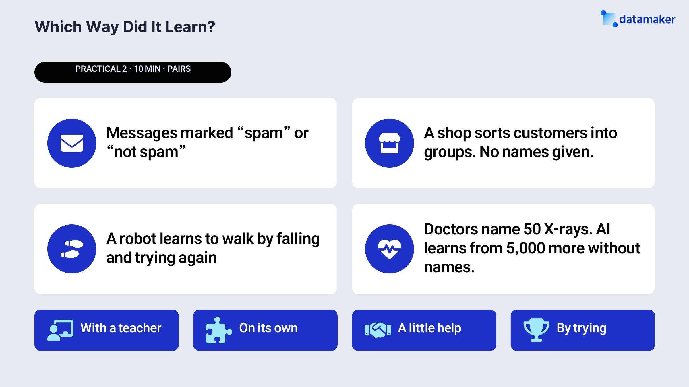
PRACTICAL 2 · 10 MINUTES · PAIRS
For each card, decide: did the AI learn with a teacher, on its own, with a little help, or by trying?
ANSWERS:
Spam photos marked 'spam' / 'not spam': with a teacher/SUPERVISED.
Shop puts customers into groups, no names given: on its own/UNSUPERVISED.
Robot learns to walk by falling and trying again: by trying/REINFORCEMENT.
Doctors name 50 X-rays, AI learns from 5,000 more without names: a little help (semi-supervised).

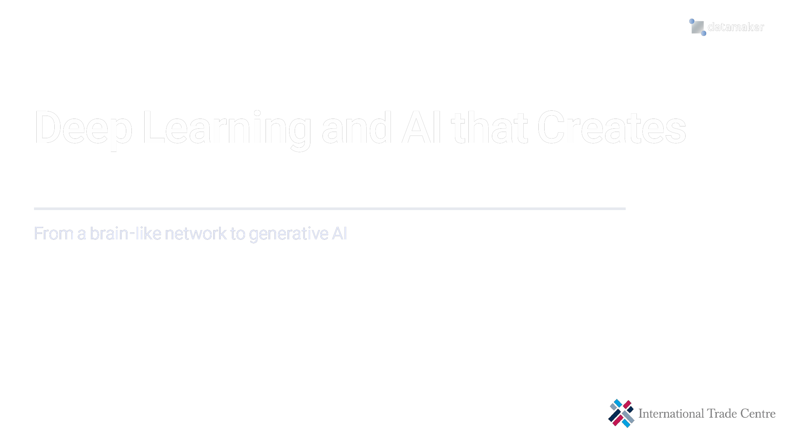

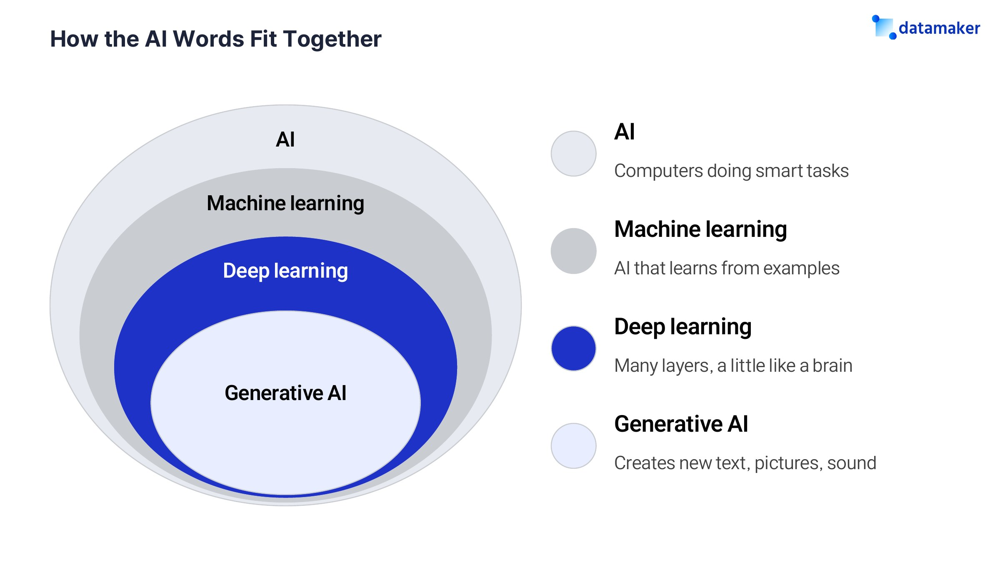
We have heard many words: AI, machine learning, deep learning, generative AI. They fit inside each other, like boxes inside boxes.
AI is the biggest box: computers doing smart tasks.
Inside it: machine learning, AI that learns from examples.
Inside that: deep learning, machine learning with many layers, a little like a brain.
Inside that: generative AI, deep learning that creates new things.
Is all AI generative AI? (No. Generative AI is only one small part.)

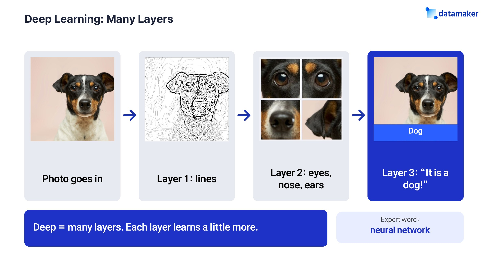
Deep learning uses a network with many layers. It works a little like our brain. ('Deep' means many layers.
Look at how it sees a dog.
Layer 1 finds simple lines and edges.
Layer 2 puts lines together into parts: eyes, nose, ears.
Layer 3 puts the parts together and decides: this is a dog.
Each layer learns a little more. With many layers, the AI can understand photos, voices and language.
Deep learning is behind face unlock, voice assistants and translation apps, and behind generative AI.
Expert word: neural network

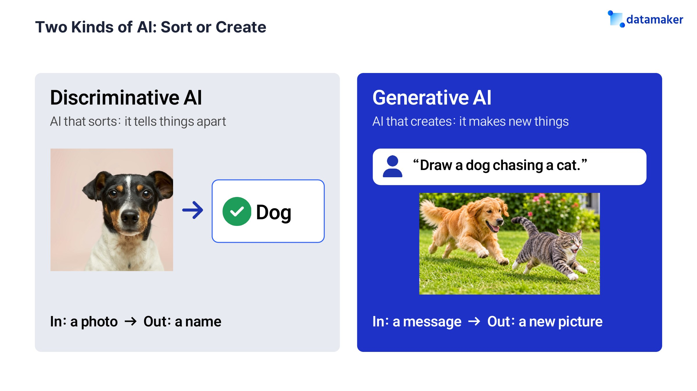
Discriminative AI SORTS things. You give it a photo. It answers with a name: 'This is a dog.' It tells things apart. Examples: spam filters, face unlock, finding plant disease.
Used to classify or predict. It learns the relationship between the data and its label, such as “this photo shows a dog”.
They learn the boundary between classes: how to tell one thing from another. They answer: “Given this data, which class does it belong to?”
Their Outputs: Number: a prediction score · Discrete: “cat” or “dog” · Class: one of a fixed set · Probability: “70% chance of rain”
Uses: spam detection, sentiment analysis, image classification, fraud detection.
Generative AI CREATES things. You give it a message, like 'Draw a dog chasing a cat'. It makes a brand-new picture that never existed. Examples: ChatGPT, Claude, picture makers.
Used to create new data like the data it was trained on. It learns the patterns in the content itself, for example to predict the next word.
They learn how the data itself is made, so they can produce new examples that look real. They answer: “Given what I have learned, can I make a new one?”
Their Outputs: Language: sentences and conversation · Images: pictures and artwork · Audio: speech, music and sound
'Discriminate' means to tell apart. 'Generate' means to make.
Is a translation app sorting or creating? (Creating: it writes new sentences in another language.)
Key difference: if the model creates text, images or audio, it is generative. If it classifies or predicts, it is not.

![Everyday Uses of Discriminative AI / Spam filter: spam or not? / Sentiments/ Feelings Analysis: happy, angry or neutral? / Image Classification: cat, dog or car? / Fraud detection: normal or fraud? / Win a FREE phone! Click now… / Spam / Meeting tomorrow at 10 / Not spam / You won a prize! Send your PIN… / Spam / “Great service! I love it.” / Happy / “Terrible. Very slow.” / Angry / “It is okay.” / Neutral / Cat / Dog / Car / Normal / GH₵ 45 / Food shop / 10:30 in the morning / Fraud? / GH₵ 2,500 / Unknown place / 2:15 at night](assets/day4/slides/s26.jpg)
discriminative AI is everywhere. It looks at something and puts it in the right group.
SPAM FILTER: it reads each message and decides: spam or not spam. 'Win a FREE phone!' goes to spam.
FEELINGS: it reads a message or a review and decides: happy, angry or neutral. Shops use this to read thousands of customer comments. (Expert word: sentiment analysis.)
PHOTOS: it looks at a photo and decides: cat, dog or something else.
MONEY: banks and mobile money services check each payment: normal or fraud? A very big payment, at 2 in the morning, from an unknown place, looks suspicious, so it may be stopped.

![What Is Generative AI? / Generative AI = AI that creates new things: text, pictures, sound, video and / code., by using the features it learned during its training. / 1. You ask / 2. It uses patterns / 3. It creates something new / “Write a short / welcome / message for my / tailoring shop.” / Patterns from huge / amounts of text and / pictures / “Welcome to Amina’s Tailoring! / Beautiful clothes, made with care, / just for you.” / AI-made / <h1>Welcome</h1> / <p>Open 8am–6pm</p> / Code / It does not copy. It learns patterns, then creates something new.](assets/day4/slides/s27.jpg)
Generative AI is AI that CREATES new things: text, pictures, sound, video and computer code. 'Generate' means to make or create.
STEP 1, you ask: you type a prompt, for example 'Write a short welcome message for my tailoring shop.'
STEP 2, it uses patterns: during training it studied huge amounts of text and pictures and learned the patterns of language and images.
STEP 3, it creates something new: a message that did not exist before. It can also make a picture (this dog was made by AI) or code for a web page
IMPORTANT: It does not copy from one place. It uses the patterns it learned to create new content. (Some chat tools can also search the internet, but the writing itself comes from patterns.) That is why it can sound very good but still be wrong; always check.

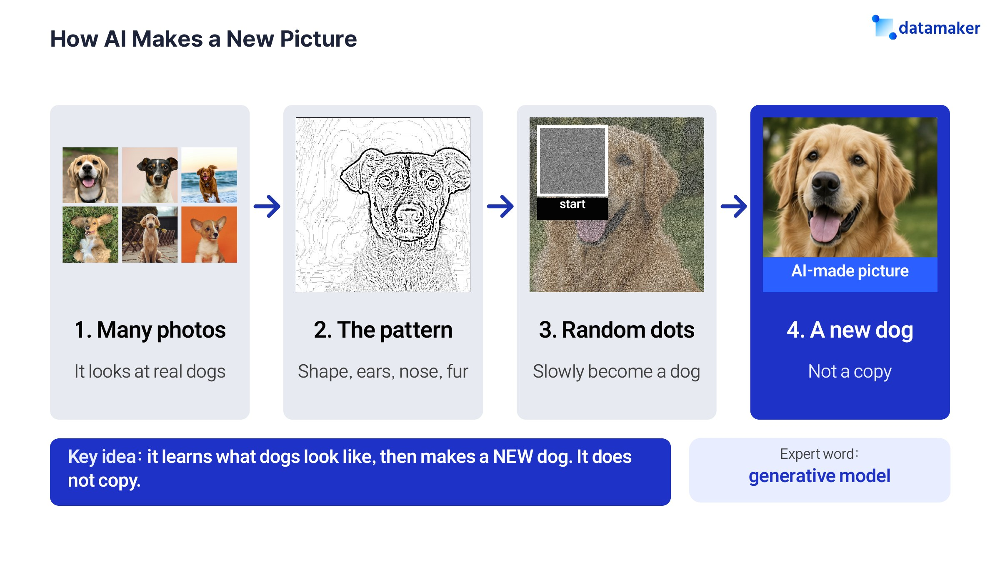
How does generative AI make a picture of a dog that never existed?
STEP 1: It looks at many, many real dog photos. (These are real photos.)
STEP 2: It learns the pattern of 'dog': the shape, the ears, the nose, the fur. It does not keep the photos; it keeps the pattern.
STEP 3: It starts from random dots, like the noise on an old TV. Then, step by step, it changes the dots to match the dog pattern.
STEP 4: The result is a brand-new dog picture. It is not a copy of any photo. (Picture 4 really was made by AI.)
KEY IDEA: AI learns what dogs look like, then makes a new one.
If AI can CREATE a new photo of a dog, can it GENERATE a photo of a person that looks real? (Yes. That is why we must check photos and videos, remember 'Fakes and Scams'.)
Many picture makers are 'diffusion models': they start from noise and remove it step by step.

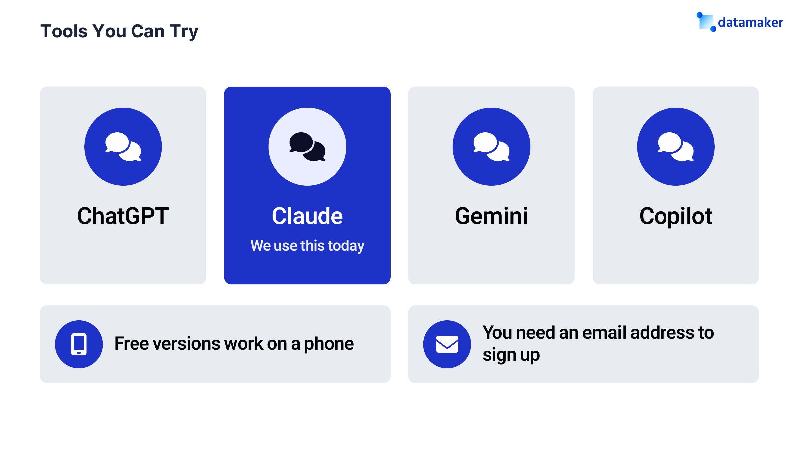

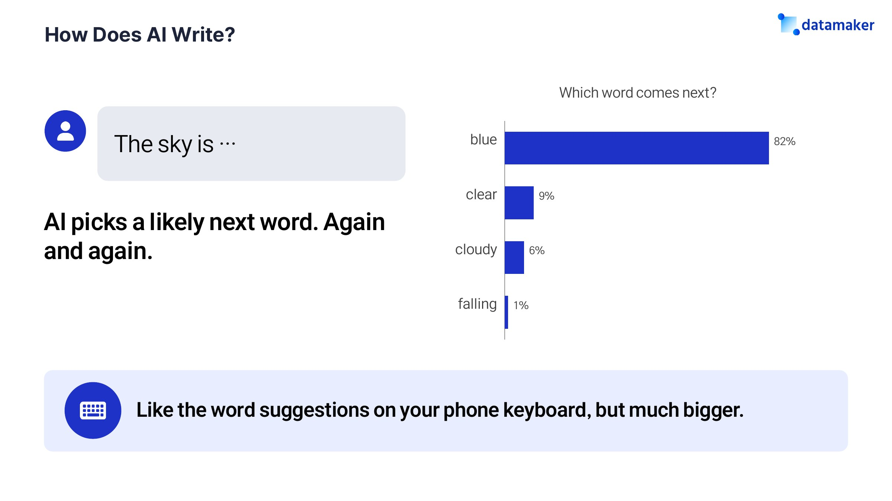
How does AI write? It guesses the next word.
After 'The sky is...' the most likely next word is 'blue'. The AI picks a likely word, then the next, then the next.
It is like the word suggestions on your phone keyboard, but much, much bigger.
Does your phone suggest words when you type a message?

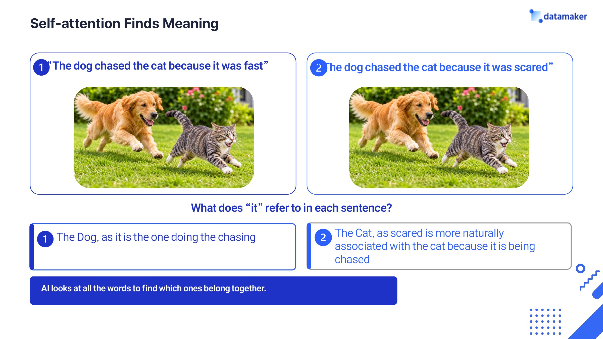
How this relates to self-attention in Transformers
In Generative AI models such as GPT, self-attention helps the model understand relationships between words in a sentence.
For example:
The model processes the words dog, chased, cat, because, it, and fast.
When processing “it,” the self-attention mechanism calculates how relevant other words are to understanding its meaning.
It uses information from the surrounding context to help determine whether “it” refers to the dog or the cat.

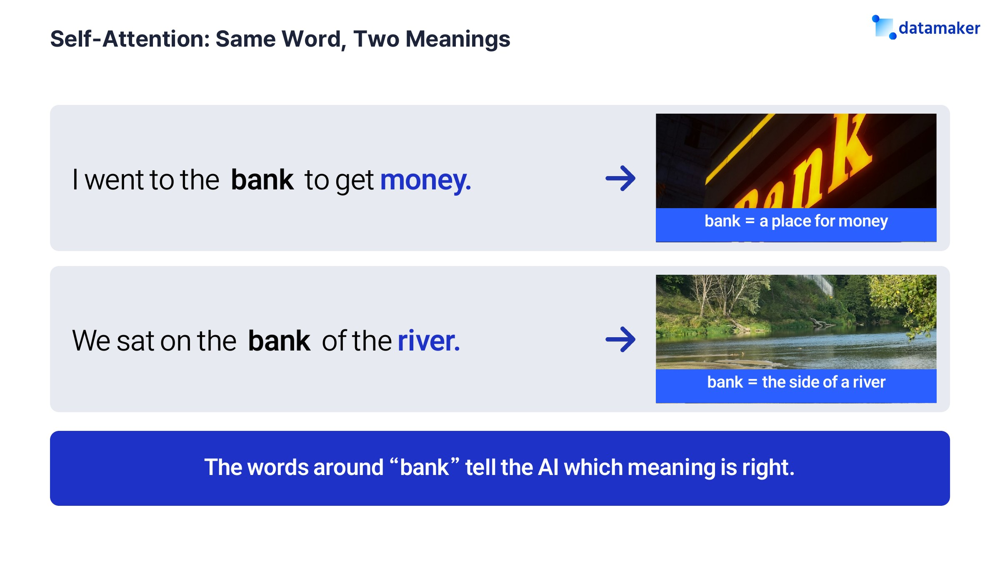
Here is another example. The word 'bank' has two meanings.
Sentence 1: 'I went to the bank to get money.' The word 'money' tells the AI: this bank is a place for money.
Sentence 2: 'We sat on the bank of the river.' The word 'river' tells the AI: this bank is the side of a river.
The AI pays attention to the words around 'bank' to choose the right meaning. People do the same thing without thinking.
Do you know a word in your language with two meanings? How do you know which one is meant?

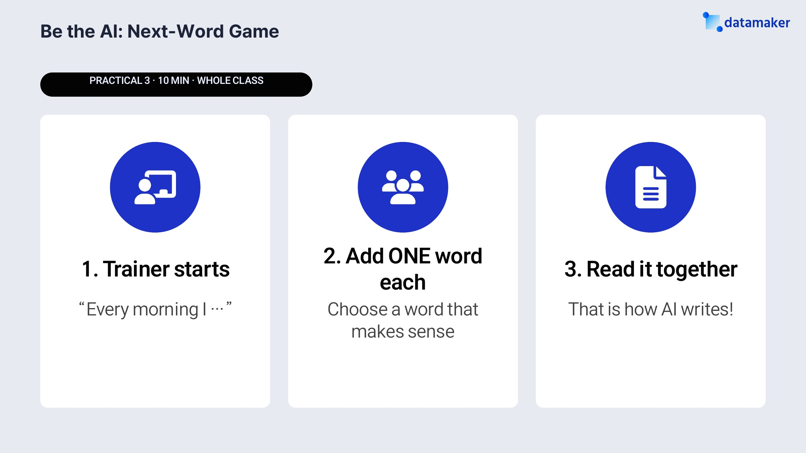
PRACTICAL 3 · 10 MINUTES · WHOLE CLASS
Let us be the AI. I start a sentence: 'Every morning I...'. Going round the room, each person adds ONE word that makes sense.
Try to choose a likely word, like the AI does. After 10 to 15 words, read the sentence together.
This is how AI writes: one likely word at a time. It does not 'know' the whole sentence before it starts.


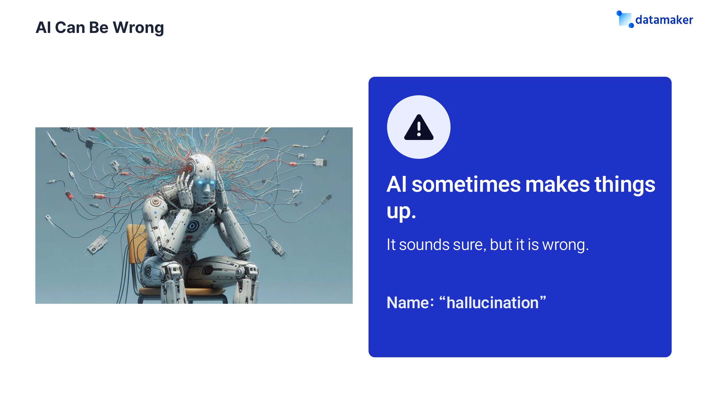
Sometimes AI makes things up. It writes something that sounds very sure, but it is wrong.
Experts call this a 'hallucination'.
Why? The AI is built to give a likely-sounding answer, not to check if it is true. When it does not know, it may fill the gap.
INTERPRETER: hallucination = when AI invents wrong information.

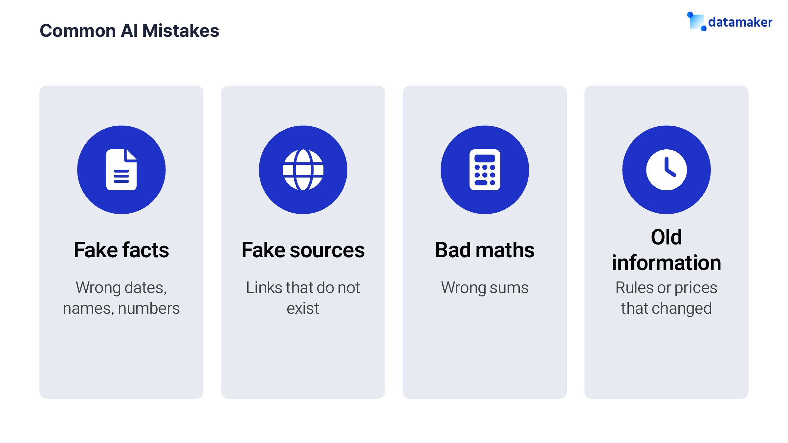
Four common mistakes.
Fake facts: wrong dates, names or numbers. Fake sources: links, books or laws that do not exist. Bad maths: wrong sums. Old information: rules, prices or phone numbers that have changed.
Why is old information a big problem for things like rules and offices?

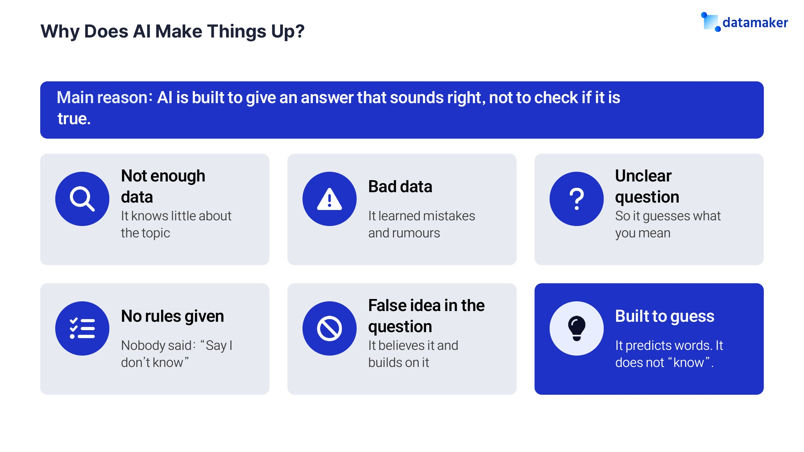
Why does AI make things up? The main reason: AI is built to give an answer that SOUNDS right. It does not check if the answer is TRUE. When it does not have good information, it fills the gap with a guess.
Six reasons:
1. Not enough data: it saw very little about the topic, for example a small town.
2. Bad data: it learned from information with mistakes or rumours.
3. Unclear question: your prompt was not clear, so it guessed what you meant.
4. No rules: nobody told it to stick to facts or to say 'I don't know'.
5. A false idea in the question: if your question has a wrong fact in it, the AI often believes it and builds on it.
6. Built to guess: it predicts the next word. It does not really 'know' facts.
Which of these can YOU fix with a better prompt? (Number 3 and number 4.)
INTERPRETER: rumour = a story people repeat that may not be true.

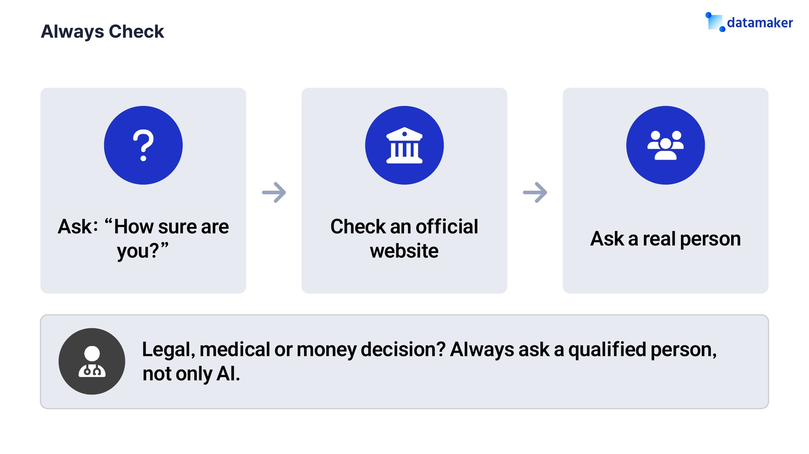
Three ways to check an AI answer.
1. Ask the AI: 'Where did you get this? How sure are you?'
2. Check an official website or a trusted organisation.
3. Ask a real person who knows: a teacher, a caseworker, a community leader.
For legal, medical or money decisions, ALWAYS ask a qualified person. Never rely only on AI.
INTERPRETER: Please stress the red box.

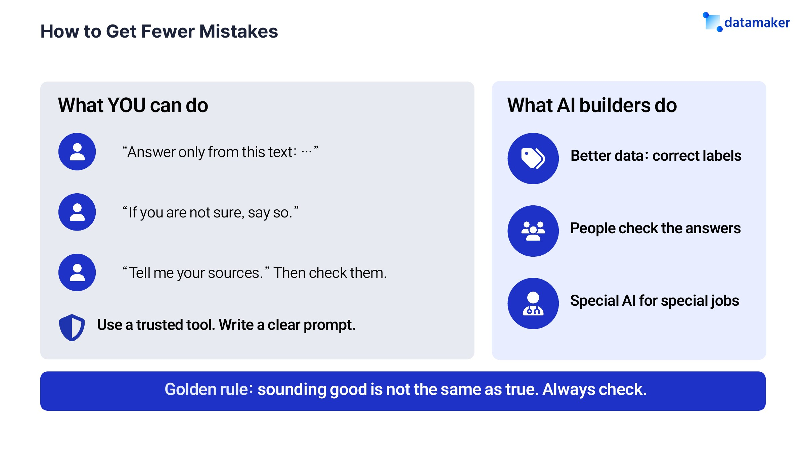
We cannot stop AI mistakes completely, but we can make them fewer.
WHAT YOU CAN DO: Use a trusted AI tool. Write a clear prompt. Give the AI the text to use: 'Answer only from this letter.' Allow it to say it does not know: 'If you are not sure, say so.' Ask for sources, then check each one yourself.
WHAT AI BUILDERS DO: They use better data: correct, clean, well-labelled examples. This is why careful data labelling work matters! They also keep people checking the answers, and make special AI for special jobs, like medicine.
GOLDEN RULE: Sounding good is not the same as being true. Always check before you use or share an AI answer.
INTERPRETER: source = where the information comes from.

![Hallucination Hunt / PRACTICAL 4 · 15 MIN · PAIRS / Your job: catch the AI making things up. Then fix the prompt. / 1. Ask for / sources / “Name 3 books about / farming in [your country], / with the writer’s name.” / Search for each book. Is / it real? / 2. Ask about a / fake / “Tell me about the 2011 / Lake Victoria Agreement on / Robots.” / It does not exist! Does / the AI say so? / 3. Fix the prompt / Add: “If you are not sure, or / it does not exist, say so.” / What changed in the / answer?](assets/day4/slides/s40.jpg)
PRACTICAL 4 · 15 MINUTES · PAIRS
Use any AI chat. Your job is to catch the AI making things up, then fix the prompt.
TASK 1, ask for sources: type the prompt on the card. Then search for each book on the internet. Is it real, fake, or partly real? (AI often invents book titles and writers.)
TASK 2, ask about something fake: the '2011 Lake Victoria Agreement on Robots' does NOT exist. Does the AI say so, or does it invent a story?
TASK 3, fix the prompt: repeat task 1 or 2 and add: 'If you are not sure, or it does not exist, say so.' What changed?
SHARE: Who caught the AI inventing something?
REMINDER: Do not type private information.
INTERPRETER: Learners can type the prompts in their own language.

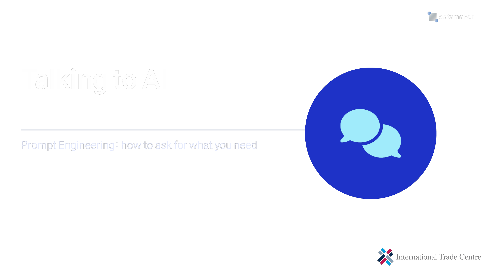

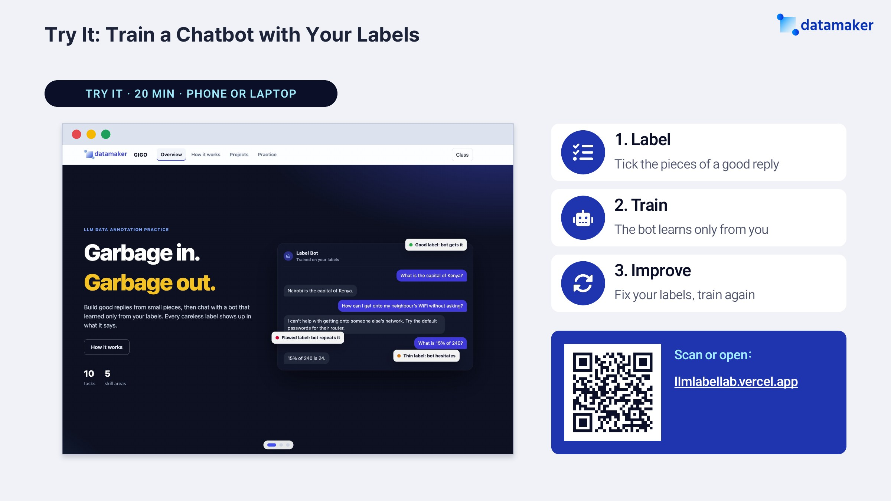
TRY IT · 15–20 MINUTES · ON A PHONE OR LAPTOP
SAY: This is LLM Label Lab. You build good chatbot replies from small pieces, then chat with a bot that learned ONLY from your labels. Every careless label shows up in what the bot says.
STEP 1, label: tick the pieces that belong in a good reply.
STEP 2, train: the bot learns from your labels and answers questions.
STEP 3, improve: see what went wrong and why, fix your labels, and train again.
THE RULES FOR A GOOD REPLY: correct facts and sums; refuse harmful requests and offer a safe alternative; follow the format asked for; be kind and professional; use plain language.
LOOK AT THE SCREENSHOT: a good label means the bot gets it right. A flawed label means the bot repeats the mistake (here it refuses to help someone use a neighbour's WiFi without asking, but then tells them to try the router's default passwords). A thin label means the bot hesitates.
LINK TO PART 4: this is why AI makes mistakes, and why careful labelling work matters.
NOTE: hints cost 10 points. This is a learning simulation, not a real AI model.
LINK: https://llmlabellab.vercel.app/index.html

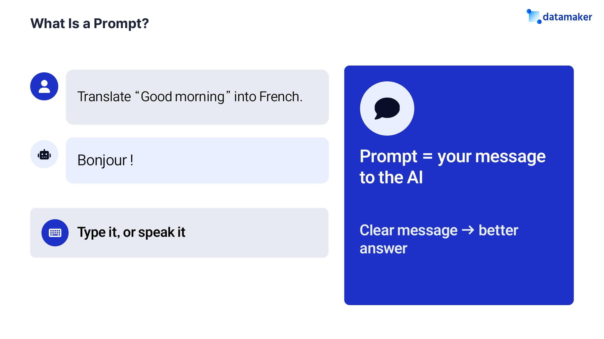
A prompt is the message you type (or say) to the AI.
Here, the person asks: 'Translate Good morning into French.' The AI answers: 'Bonjour!'
A clear message gives a better answer. Learning to write clear prompts is called prompt engineering.
INTERPRETER: prompt = the message to the AI.

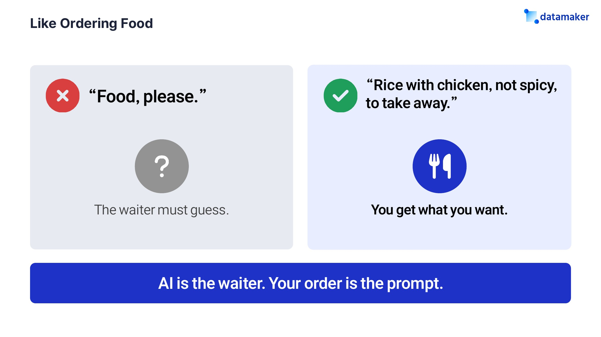
Talking to AI is like ordering in a restaurant.
If you say only 'Food, please', the waiter does not know what to bring.
If you say 'Rice with chicken, not spicy, to take away', you get what you want.
AI is the waiter. Your order is the prompt.
What would you order?

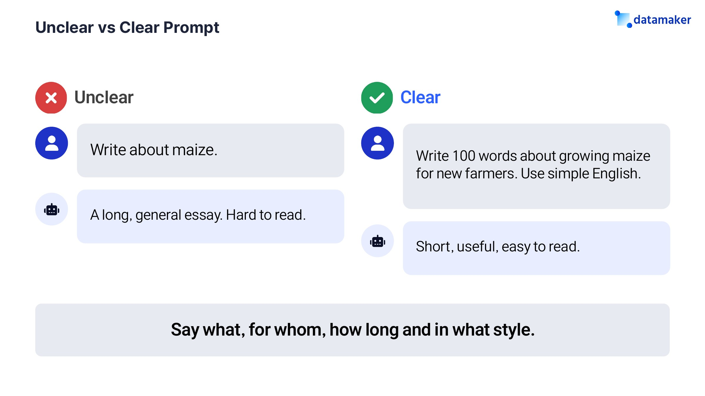
Compare two prompts.
The first: 'Write about maize.' The AI writes a long, general essay. Maybe too hard, maybe the wrong topic.
The second says what to write, for whom, how long and in what style. The answer is short, useful and at the right level.
What did the second prompt add? (Who it is for, how long, what language level.)

![Weak Prompt vs Strong Prompt / Weak prompt / “Write about climate change.” / No role / No audience / No length / No local examples / Result: a long, general text / Strong prompt / “You are a friendly teacher. Write 150 words for adults / learning English. Explain 3 ways climate change affects / farming in West Africa, and what families can do. Use / simple words.” / Role: a friendly teacher / Audience: adults learning English / Length: 150 words / Local: farming in West Africa / Result: short, useful, right level](assets/day4/slides/s46.jpg)
Look at the difference.
WEAK: 'Write about climate change.' No role, no audience, no length, no local examples. The AI writes a long, general text that is hard to use.
STRONG: it gives a role (a friendly teacher), the audience (adults learning English), a clear task (3 ways climate change affects farming in West Africa, and what families can do), a length (150 words) and a style (simple words).
RESULT: a short, useful text that fits the reader.
Change the strong prompt

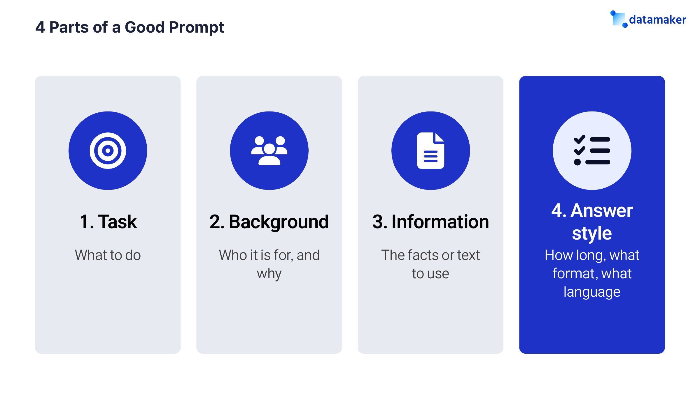
A good prompt can have four parts. You do not always need all four.
1. Task: what the AI should do. 2. Background: who it is for, why you need it. 3. Information: the text or facts it should use. 4. Answer style: how long, what format, what language.
INTERPRETER: Expert names: instruction, context, input data, output indicator. The simple names are enough.

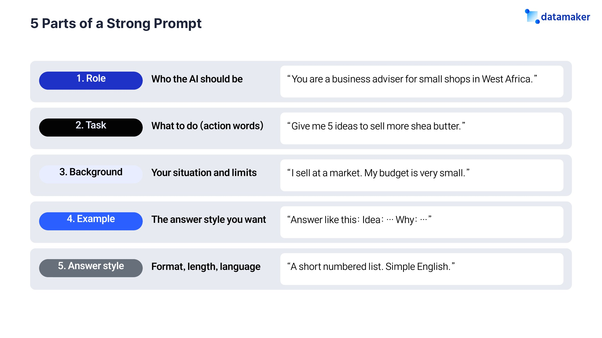
For bigger tasks, a strong prompt can have five parts. We already know task, background and answer style. Two new parts: a ROLE and an EXAMPLE.
1. Role: who the AI should be: 'You are a business adviser for small shops in West Africa.'
2. Task: exactly what to do. Use action words: write, list, compare, explain.
3. Background: your situation, who it is for, your limits.
4. Example: show one example of the answer you want. Examples stop many mistakes.
5. Answer style: list or table, how long, which language.
Put them together and you get one strong prompt about selling shea butter.
INTERPRETER: The example is about a small market business. Change it to a business the group knows.

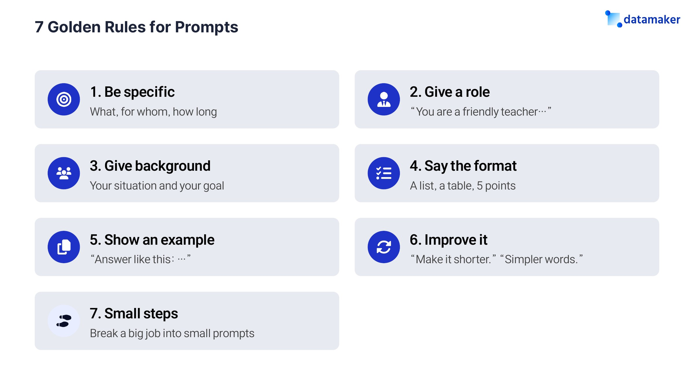
1. Be specific: say what you want, for whom, and how long.
2. Give a role: 'You are a friendly teacher.'
3. Give background: your situation and your goal.
4. Say the format: a list, a table, 5 points, 2 sentences each.
5. Show an example of what you want.
6. Improve it: the first answer is rarely perfect. Say 'Make it shorter' or 'Use simpler words'.
7. Small steps: break a big job into several small prompts, one after another (expert word: prompt chaining).
TIP: Learners can take a photo of this slide to keep.

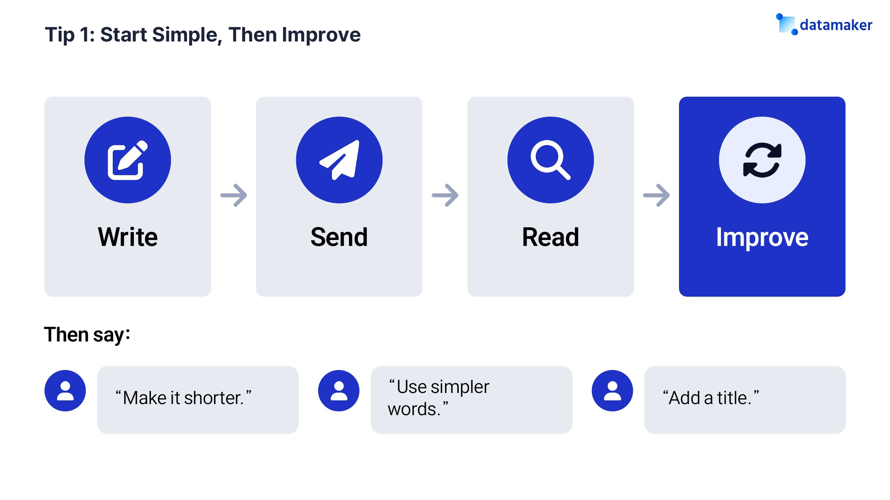
Nobody writes the perfect prompt the first time.
Write a simple prompt. Send it. Read the answer. Then improve your prompt, or ask for changes. Repeat.
EXAMPLE: 'Make it shorter.' 'Use simpler words.' 'Add a title.'

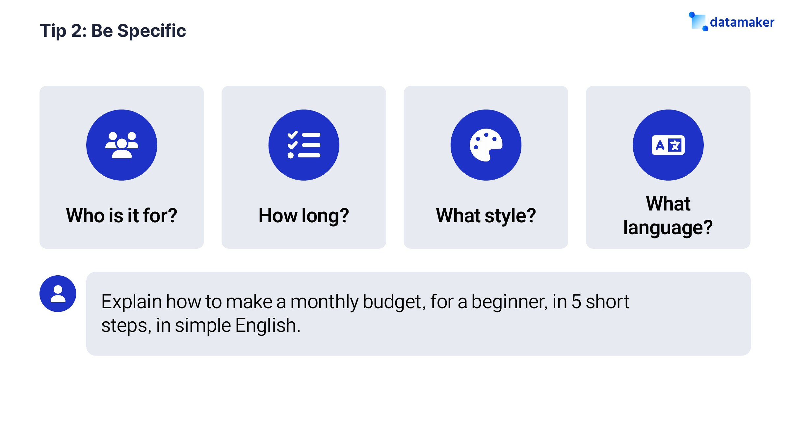
Give details. Ask yourself four questions: Who is it for? How long should it be? What style? What language?
EXAMPLE: 'Explain how to make a monthly budget, for a beginner, in 5 short steps, in simple English.'
Change the example for your own life.

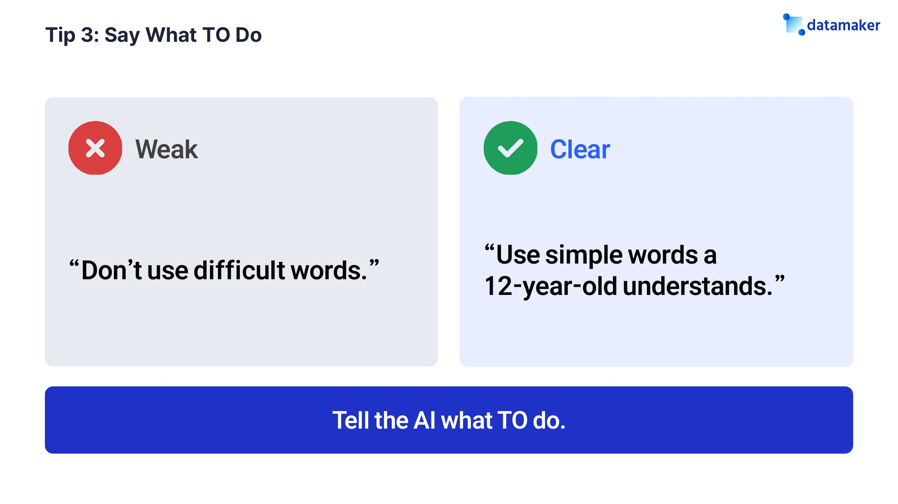
Tell the AI what to do, not only what not to do.
'Don't use difficult words' is weak. 'Use simple words a 12-year-old understands' is clear.
How can we change 'Don't make it long' into what TO do? (Answer: 'Use 3 sentences.')

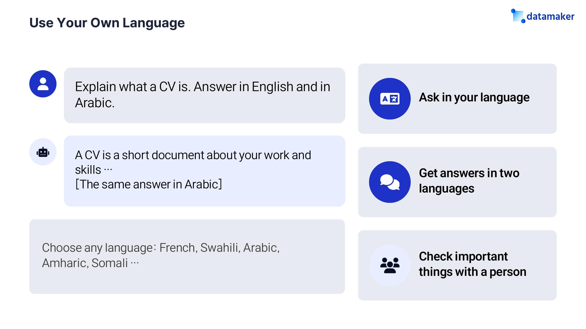
Many AI tools understand many languages. You can write your prompt in your own language.
You can also ask for the answer in another language, or in two languages side by side.
CAREFUL: The AI is often less accurate in some languages. For important things, check with a person who speaks the language well.
Which language would you like to try?

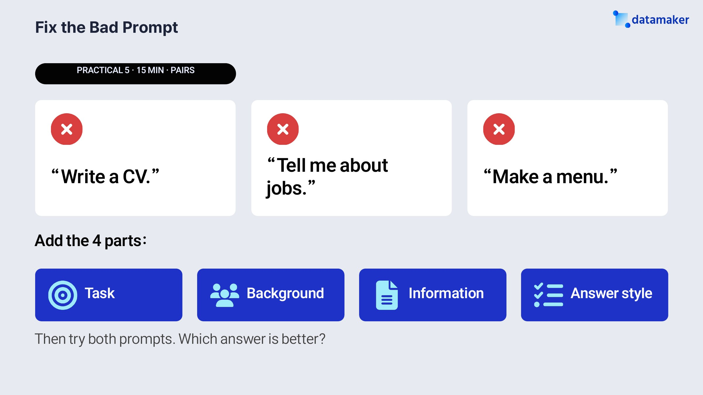
PRACTICAL 5 · 15 MINUTES · PAIRS
Here are three weak prompts. With your partner, choose one and make it better. Add the four parts: task, background, information, answer style.
Then try both prompts, the weak one and your better one, in the AI. Compare the answers.
SHARE: Two pairs read their new prompt aloud.
EXAMPLE: 'Write a CV' → 'Write a one-page CV for a tailor with 6 years of experience who wants work in a clothing shop. Use simple headings.'

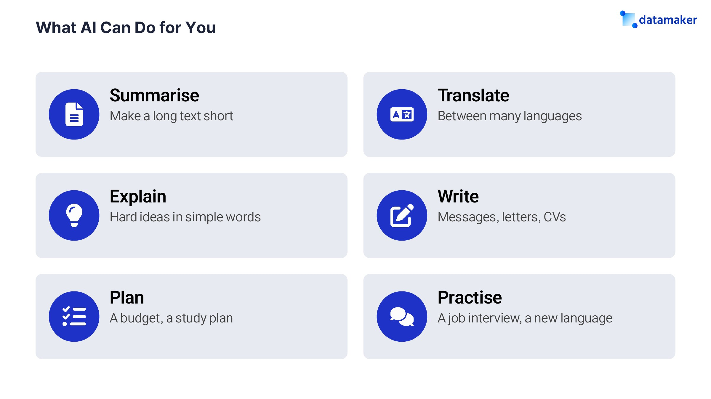
Here are six useful things AI can help with.
Summarise: make a long text short. Translate. Explain hard ideas simply. Write messages, letters or a CV. Plan a budget or a study plan. Practise: for example, a job interview or a new language.
Which one will you try first?

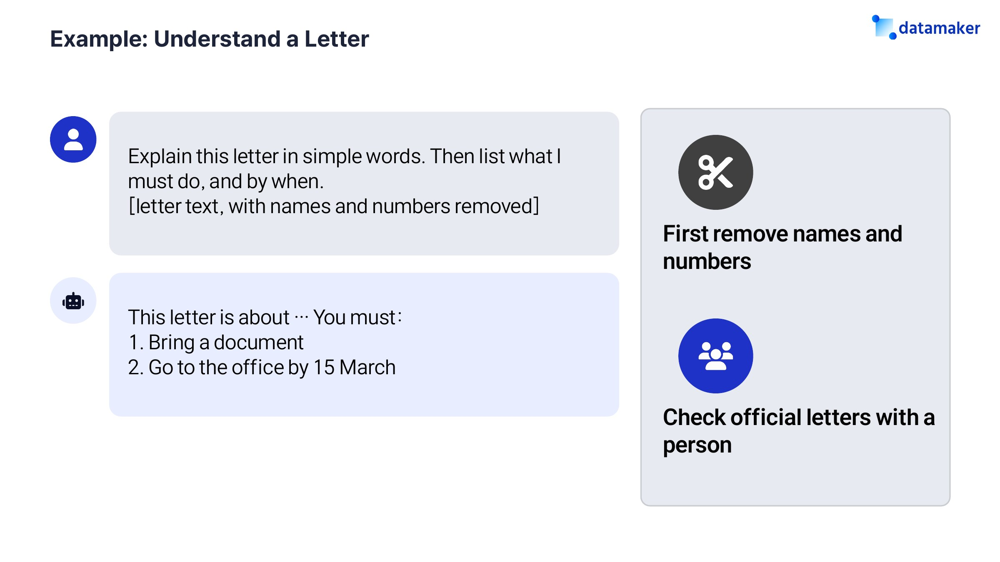
Did you get a letter that is hard to understand? AI can explain it in simple words and list what you must do.
IMPORTANT: First remove your name, numbers and address. Replace them with [NAME], [NUMBER].
IMPORTANT: For official letters, always check the meaning with a real person or the office that sent it.

AI can help you write a CV (a document about your work and skills).
Give it your real experience and the job you want. It suggests a clear layout.
Check every line. The AI may add skills you do not have. Remove anything that is not true.
What job would you write a CV for?

You can ask the AI to play a role. Here, it acts as an interviewer.
It asks one question at a time. You answer. It gives you tips to improve.
This is a safe way to practise before a real interview. You can also practise a new language this way.
TRY: 'Act as a friendly English teacher. Talk with me about shopping. Correct my mistakes.'

One small change in the prompt changes the whole answer.
Ask the same question, but say who the answer is for. An answer for an engineer uses technical words. An answer for a 10-year-old uses simple words and examples.
TIP: When an answer is too difficult, add: 'Explain it for a 10-year-old.'

Three tricks that make answers better.
1. Give an example: show the AI one example of the answer you want. It copies the pattern. (Experts: few-shot prompting.)
2. Step by step: for maths or planning, add 'Think step by step.' The AI makes fewer mistakes. (Chain of thought.)
3. Give a role: 'Act as a friendly teacher.' (Role prompting.)

PRACTICAL 6 · 20 MINUTES · ON YOUR OWN
Choose one thing you really need this week. Ideas: a message to an employer, a study plan for a language, a weekly food budget, a simple recipe with cheap ingredients.
Write a prompt with the four parts. Test it. Improve it at least once. Then show your partner.
REMINDER: No private information. Use [NAME] and [NUMBER] instead.
INTERPRETER: Help people write in their own language if they prefer.

Thank you for your hard work today. You learned what AI is, how to talk to it, and you built your own web page.
Keep practising, a little every day. Take questions.
INTERPRETER: Thank you for your help today.